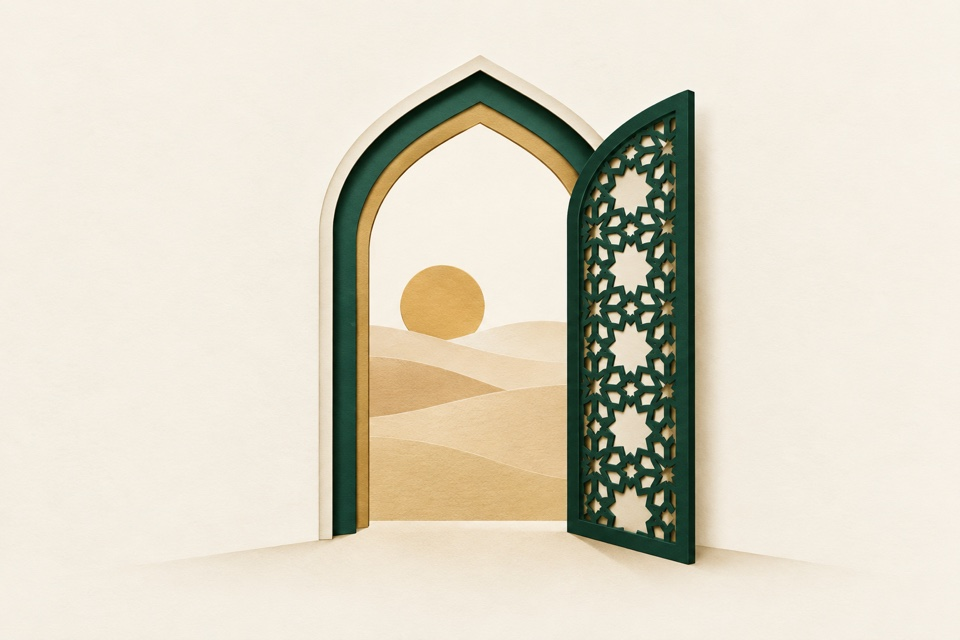

The inheritance we share
A recognisable brand composition for an opening, announcement, or identity post.
An artwork collection for Hamza
An exploration of Inheriting Islam’s cut-paper direction, from a first lesson to everyday acts of care. Twenty-four scenes, made to belong together.

Layered paper. Generous ivory. Heritage green and gold. One considered zellige detail. No people or embedded text—room for your own message.
24 artworks · 6 chapters
Explore by purpose. Open an artwork for its suggested use and full-size file.
A recognisable brand composition for an opening, announcement, or identity post.
A welcoming entrance for About, introductions, and first visits.
An inclusive gathering place, with room left open for the next visitor.
A visual metaphor for care and an inheritance that grows over time.
A gentle starting point for a first lesson or practice invitation.
For invitations to read, learn, or return to a daily routine.
A patient setting for guided learning with a teacher.
A progress illustration for steady practice, without suggesting a guaranteed outcome.
For the reading collection, book releases, and curated recommendations.
A simple invitation to continue a saved chapter.
A pause between reading and reflection, without depicting scripture.
An illustration for learning milestones; it is not an actual certificate.
A reusable travel-and-prayer scene alongside the original app logo.
For early family life and welcoming a child, without portraying people.
A gentle image of support, remembrance, and practical care.
For generosity, shared provision, and practical community support.
For cohorts and shared learning, with an open, welcoming composition.
A distinct podcast image for thoughtful conversations.
For guest invitations, hospitality, and community stories.
A clear, friendly image for contact and questions.
For Ramadan and evening reflection posts.
For iftar, gratitude, and the beauty of simple moments.
A festive illustration ready for Eid greetings and community invitations.
For stories about patience, preservation, and caring for what we inherit.
No artworks match this view. Try another search or category, or save a few favourites to your shortlist.
Made to be useful
Suggested uses connect each scene to a page or moment. These concepts are separate from the website; none replaces Hamza’s portrait, app logos, book covers, or certificates.
Use the illustrations with your own captions and typography. Download the original and preview your crop before posting; the surrounding ivory gives room to compose.
Your shortlist stays in this browser. Download it as a text file to share your choices, or copy an individual artwork link from its detail view.
These are AI-generated artwork proposals for Hamza’s review, not approved brand assets. Illustrations contain no scripture; books have unlettered pages. Read the collection notes.